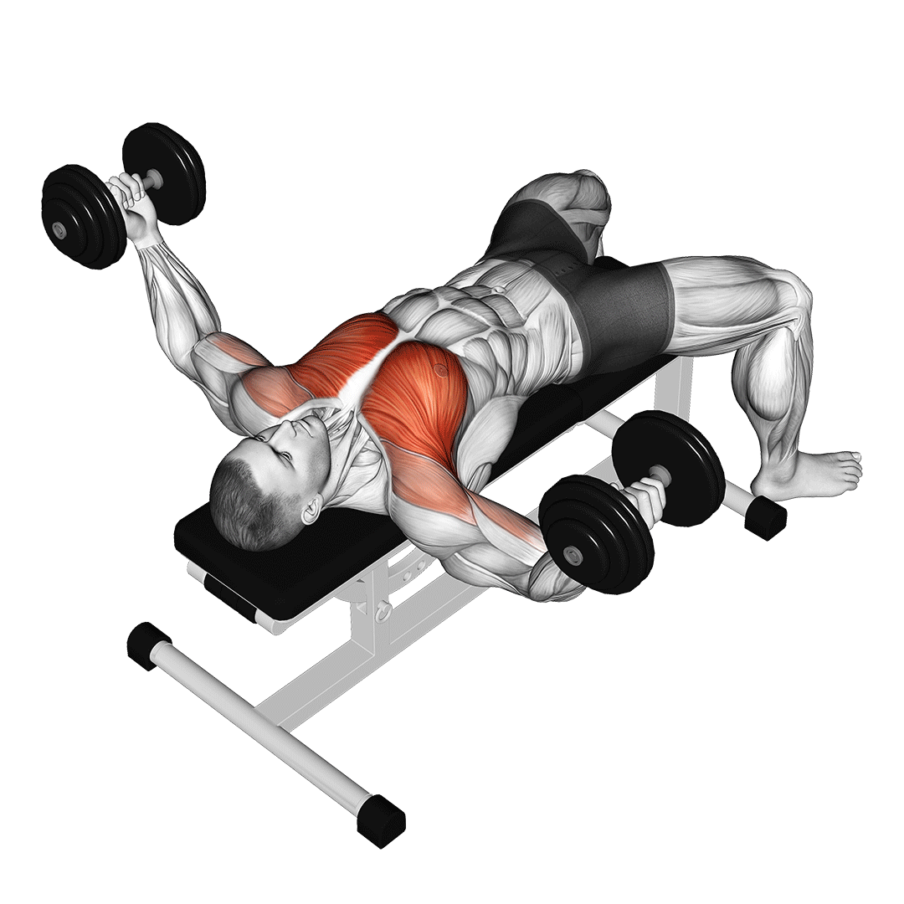

Mellizom gyakorlatok

|
FekvenyomásA személy hanyatt fekszik a gyakorlat céljára szolgáló különleges padon, a fekvenyomópadon, talpai a talajon vannak. A feltámasztott súlyzórudat két kezével megfogja (vállainál szélesebb fogással), kézfeje az arca felé néz. A rudat kiemeli a támasztékról, karjait kinyújtja, ez a kiinduló állás. A rudat a mellére engedi, körülbelül a mellbimbóhoz, közben levegőt vesz. A súlyt ezután kinyomja karja nyújtott állapotáig, közben a levegőt kifújja. A szabályos végrehajtás kimért és fegyelmezett, nincs lendítés és hirtelen mozdulat, nem mozog a csípő, a hát nem hajlik, a talpak is stabilan a földön vannak. |
|
|---|---|---|
Fekvenyomás Döntött PadonHasonló a kivitelezése mint az egyenes padon történő fekvenyomásnak. A pad dőlésszöge: a háttámla 30 vagy 45 fokos megemelésével a mellizom felső része dolgozik fokozottabban, a tricepszet és a mellső deltaizmokat is igénybe veszi. |

|
|
 |
Mellnyomó GépÁllítsd be a megfelelő ülőmagasságot, úgy hogy a csukló a mellkas vonalába helyezkedjen el. Fejedet és csípődet tartsd a gép támlájához szorítva, ezáltal csökkentheted a nyaki és az ágyéki gerinc szakasz sérüléseit. Koncentrálj a mellizom feszítésére, emeld ki a mellkasod. Lassú koncentrált ismétléseket hajts végre,a csúcsösszehúzódásnál feszíts mellizmaidra. |
|
Tárogatás KézisúlyzóvalFeküdj háton egy vízszintes padra, tarts mindkét kezedben egy egykezes súlyzót és nyomd ki karnyújtásnyira a mellkas fölé. A súlyzókat engedd le könyöködet enyhén behajlítva, és távolítsd a törzsedtől ki és lefelé olyan távolra, amíg jó feszülést nem érzel a mellkasi területen. A felkarodnak jelentősen a tested vonala alá kell mennie. Vegyél mély levegőt amikor a súlyzót lefelé ereszted, és akkor lélegezz ki, amikor ugyanazon az íven felső helyzetbe emeled vissza. |
 | |
 |
Tolódzkodás (Mell)Engedd le magad olyan mélyre, amennyire csak bírod, a kinyomás végén pedig nyújtsd ki a karodat. Ügyelj rá hogy a könyék ne legyen kiakasztva a csúcsponton. A mozgás legyen végig kontrollált, ne rugózz az alsó ponton, és ne végezd túl gyorsan a gyakorlatot. A szélesebbre állított korláton végzett gyakorlattal a mell külső része edzhető. Minél szűkebb a fogás, annál inkább a tricepszre helyeződik a hangsúly. |
|